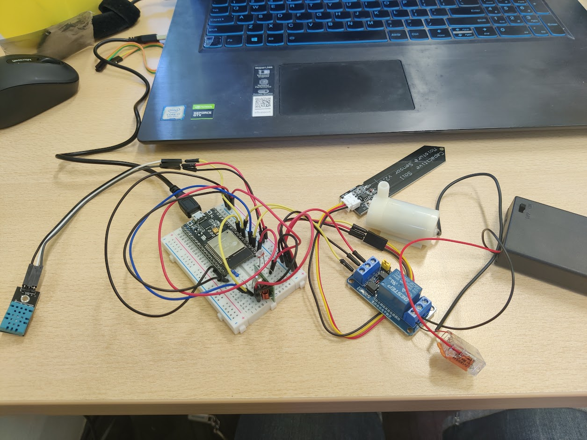

Introductie
Welkom op de pagina betreffende het vak Smart Technology. Hieronder zijn verschillende kopjes te zien waaronder: wat ik geleerd en gedaan heb tijdens de lessen over 3D-printing, het proces van het maken van mijn IoT-schakeling, aan welke competenties ik gewerkt heb, een situatiebeschrijving aan de hand van de STARRT-methode en afsluitend een samenvatting van wat mijn leerervaring is van dit vak.
Theorielessen 3D-printing
De lessen zorgde ervoor dat wij bekend werden met de term: Additive Manufacturing, wat het proces is van het maken van voorwerpen vanuit 3D-modellen.
Naast de lessen hebben wij ook per groepje een presentatie gegeven over diverse sectoren waar 3D-printing wordt toegepast.
Mijn groepje had het onderwerp: Industrie.
De onderwerpen die hierbij kwamen kijken zijn:
- Automotive,
- Ruimtevaart,
- Vliegtuigbouw,
- Elektronica-industrie.
Ik heb zelf geleerd dat het veel vaker voor komt dan mensen denken. Het wordt voornamelijk gebruikt om prototypes te ontwerpen van nieuwe componenten en deze zelfs te testen.
IoT-schakeling
Vanaf mijn vooropleidingen was ik al bekend met het gebruik van een micro-computer en een breadboard. De lessen waren voor mij een opfrissing over hoe deze onderdelen werken. Uiteindelijk had ik aan het einde van les 2 de schakeling al bijna af.
Tijdens de lessen heb ik verschillende mede-studenten ondersteunt met het bouwen van de IoT-schakeling en het maken van het script.
Maken van een proof of concept met behulp van een breadboard
Het ontwerpen van een PCB (Printed Circuit Board)

Het solderen van PCB met sensoren en bekabeling

Het ontwerpen van een bakje voor het PCB

________________________________________________________________________________________
Eindresultaat
Aan welke competenties heb ik gewerkt?
Tijdens de lessen van Smart Technology is er gewerkt aan verschillende competenties. Alle competenties van deze minor zijn terug te lezen via
deze link.
Ik heb gewerkt aan de volgende competenties:
- 1. Initiatief en betrokkenheid:
- Aanwezig zijn in de lessen,
- Het uitvoeren van de opdrachten,
- Voortouw nemen voor de presentatie,
- Het stellen van vragen tijdens de lessen.
- 2. Meningen of adviezen zijn gebaseerd op gedegen onderzoek:
- Het advies geven aan medestudenten hoe diegene het beste de Proof of Concept kan opbouwen,
- Het onderzoek doen naar de 3D-printing industrie van vliegtuigbouw en dit presenteren aan de klas.
- 3. Ambitieuze leerdoelen en verkent disciplines buiten je eigen vakgebied:
- Het gebruik maken van EAGLE om een PCB te ontwerpen,
- Het ontwerpen van een bakje met behulp van Solidworks,
- Het 'slicen' van de 3D-modellen en dit printen in het FabLab.
- 4. Bewust bezig zijn met persoonlijke groei:
- Opfrissen van kennis over IoT-schakelingen door lessen, maar ook door medestudenten,
- Uitleg geven aan niet-ICT'ers,
- Het duidelijk over laten komen van mijn uitleg. - 6. Andere actief helpen groeien:
- Medestudenten uitleg geven over breadboard en hoe je dit kan inzetten.
- Medestudenten helpen met het programmeren van het plansysteem script,
- Uitleg geven aan medestudenten over de code die zij aan het programmeren zijn.
Situatiebeschrijving
| Situatie: | Op woensdag 27 september 2023 (de dag voor de les Smart Technology) hadden we met ons groepje nog steeds geen presentatie aangemaakt. Deze diende wij te presenteren de volgende ochtend. |
|---|---|
| Taak: | Ik heb iedereen aangestuurd dat zij ieder een dia moeten presenteren. Daarnaast heb ik een presentatie aangemaakt en doorgestuurd. |
| Actie: | Ik heb een presentatie aangemaakt en deze doorgestuurd naar het groepje. Hierbij hebben wij ook de verschillende thema's verdeeld. |
| Resultaat: | Uiteindelijk een door iedereen ingevulde presentatie die gepresenteerd is door ons tijdens de Smart Technology les. |
| Reflectie: | Ik vind dat ik het goed heb aangepakt om de groep aan te sturen, zeker omdat er nog weinig tijd was. Als ik dit niet had gedaan, dan hadden we geen duidelijke afspraken gemaakt en geen presentatie. |
| Transfer: | In het vervolg zou ik precies hetzelfde doen, ik heb eerst afgewacht. Helaas kwam er door mijn groepje niks. Ik heb dus de leiding genomen, terwijl ik dit al tijdens een eerder project juist heb afgeleerd. |
Samenvattend
Het maken van de IoT-schakeling heb ik zeer prettig ervaren. Door mijn vooropleiding op het MBO kende ik al Arduino en de techniek van een breadboard, dit gaf mij een voorsprong met het maken van het eerste prototype / proof of concept.
Vervolgens het intekenen op mijn laptop vond ik interessant om te doen, zodat je van je eigen proof of concept een daadwerkelijke chip kan laten maken. Vervolgens mochten wij gaan solderen, dat had ik op de middelbare school voor het laatst gedaan, dus het was even wennen om de juiste techniek te vinden. Uiteindelijk is het mij gelukt. Het kostte mij wel een aantal keer.
Ik had op mijn PCB-bord de DHT-sensor niet correct ontworpen waardoor ik mijn DHT-sensor doorbrandde. Hierdoor dacht ik dat ik ergens kortsluiting had op mijn PCB-bord waardoor ik een nieuw PCB-bord heb gepakt en deze opnieuw heb gesoldeerd met nieuwe headers.
Nu dat helemaal werkte en mijn bakje af was, heb ik mijn bordje en alle componenten in het bakje gedaan. Helaas brak een header af waardoor ik weer opnieuw moest beginnen.
Ik heb het eerste bordje gepakt en heb deze gebruikt, want ik had geen kortsluiting op het bordje, maar alleen met de DHT-sensor aansluiting. De DHT die ik thuis had liggen heeft andere pin-outs dan degene die wij kregen, dus het was geen probleem.
Deze tegenslagen hebben mij niet in de weg gezeten en heb toch uiteindelijk, zoals het filmpje laat zien, een werkende IoT-schakeling en daarnaast kennis over 3D-printing.